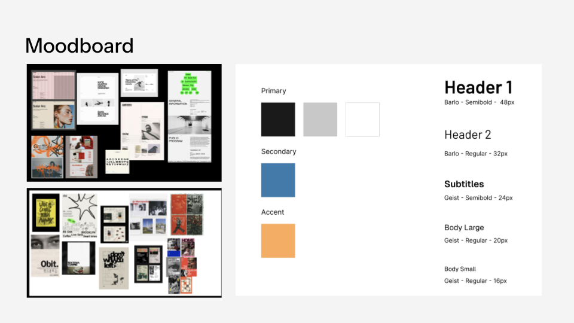
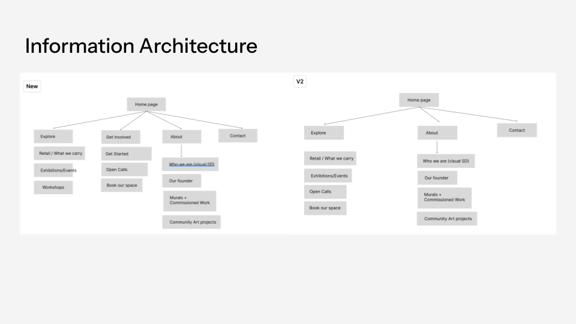
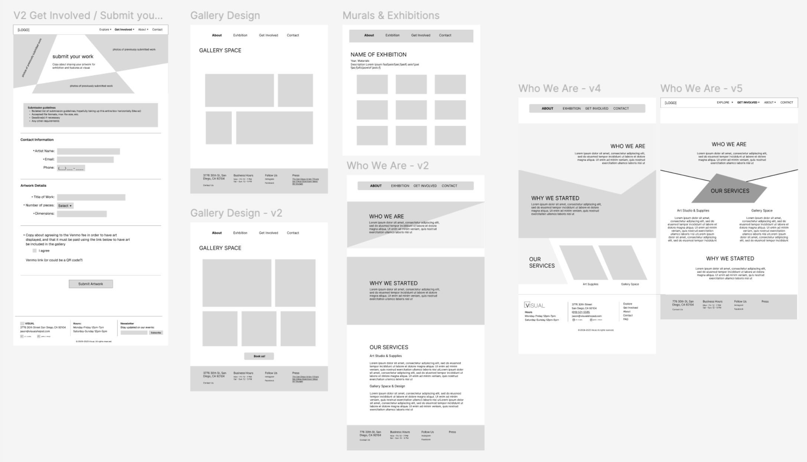
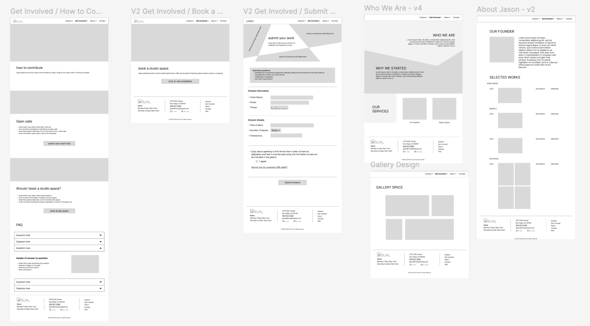
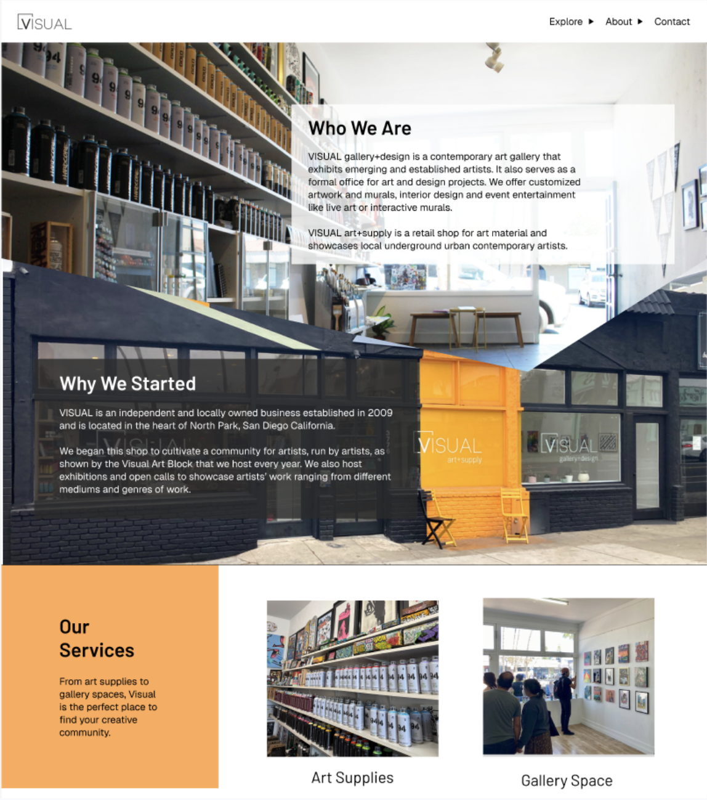

Visual SD
website redesign
Visual SD is an art and supply studio in North Park. I redesigned its website from a confusing event board into a simple hub for events, sign-ups and shopping.
The problem
Jason Gould founded Visual SD, a studio that hosts events, workshops and artist open calls and also sells art supplies. His website worked as a placeholder board of current events, and he tracked registration payments by hand.
Overall the site was confusing, overwhelming and not functional for visitors.
Research with Jason
I started by interviewing Jason about how events and registration work today.
- How do you currently collect registration for gallery events? Where is the friction, and what makes it easy?
- How often do you realistically want to update the website yourself?
What I learned
- Events are central, but registering through Instagram and Venmo creates friction.
- The website should handle event sign-ups and act as the second stop after someone finds Visual SD on Instagram.
Testing the existing site
I ran usability tests on the current site and asked people to think aloud. A few quotes stood out.
“There’s too much going on... I don’t know where to look.”
“I think they can add a little more information about the art that they’re showing off.”
“There’s no words on this page at all, so I don’t know what you sell.”
“The photos could maybe be put together differently.”
Pain points
- Poor layout
- Looks unfinished and amateur
- Inefficient use of space
Opportunities
- Show who they are as a store
- Clarify the structure and information
Competitive analysis
I compared Visual SD with two other local and graffiti-adjacent brands to see what a strong identity and navigation look like.
Visual SD
- Strong local identity
- Strong social media presence
Krink
- Strong visual identity
- Art style similar to Visual SD (graffiti)
Art on 30th
- Intuitive website navigation
- Direct competitor in the North Park area
From research to design
Moodboard
I gathered references that match Visual SD’s graffiti-influenced, street-art personality.

Information architecture
I reorganized the site so people can find events, the shop and the studio in one or two clicks.

Low-fidelity wireframes


High-fidelity design
A second round of usability testing raised concerns about readability, which I fixed before finalizing the design.

Reflection
- Spend more time with real users during research and testing.
- Create many prototypes instead of polishing one too early.
- Ask for feedback early and often.
Constraint: implementation and the hand-off process.
Thanks for reading. Have questions? Get in touch or see more work.